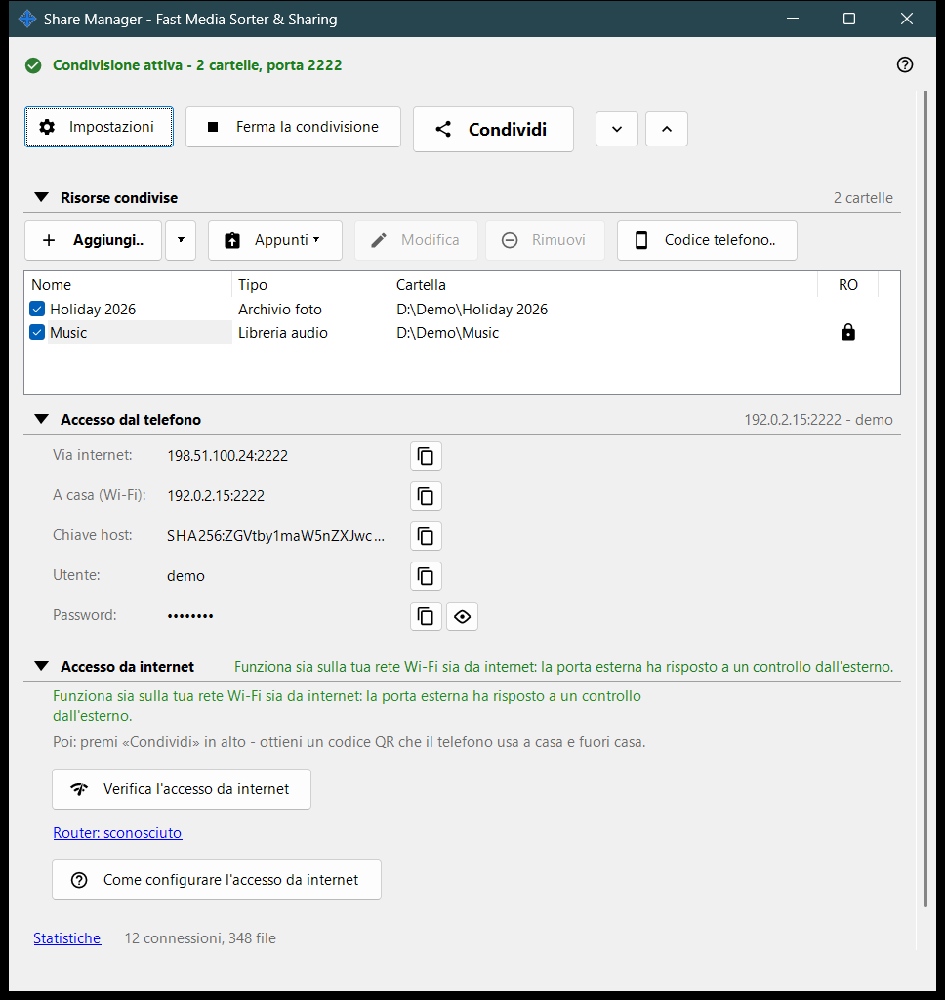
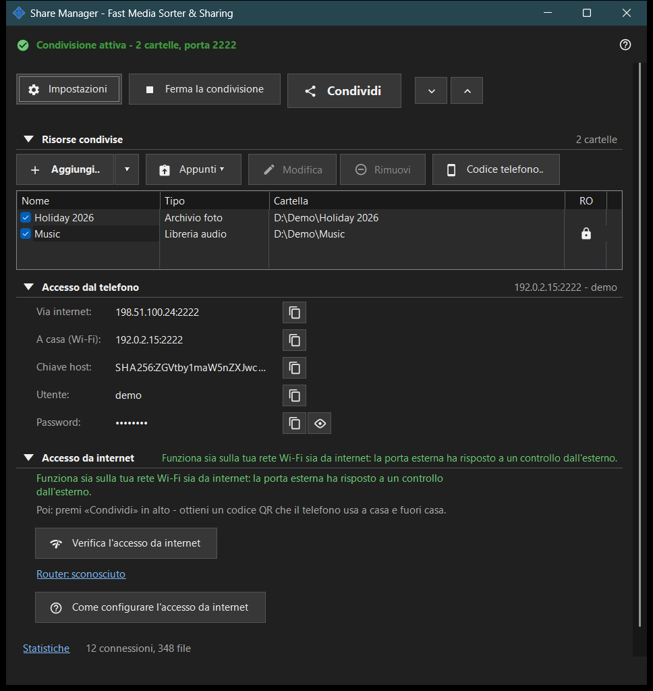

Share Manager - Fast Media Sorter & Sharing
Scopo
La finestra principale di Share Manager: il servizio locale di condivisione che esegue anche le operazioni pianificate sui file. Elenca le cartelle che questo PC condivide con un telefono tramite SFTP, avvia e ferma la condivisione, fornisce il codice di accesso e mostra come il telefono può raggiungere il PC. Le operazioni pianificate sui file funzionano anche senza condivisione di cartelle: hanno una finestra propria, che si apre dal menu dell'icona nell'area di notifica o dal menu cartella del visualizzatore; la loro pagina e quella dell'account di scambio si trovano anche nelle impostazioni del gestore. Si apre dal visualizzatore o dall'icona nell'area di notifica; chiudendo la finestra l'app resta nell'area di notifica.


In questo ordine
- Premi «Aggiungi..» e scegli «Cartella..» per inserire una cartella nell'elenco.
- Spunta la cartella: vengono servite solo le cartelle spuntate.
- Premi «Avvia la condivisione» (serve almeno una cartella spuntata).
- Premi «Condividi» per ottenere il codice QR o il file .fmscfg per il telefono.
- Per l'accesso dall'esterno della rete domestica apri il gruppo «Accesso da internet» e usa i suoi due pulsanti.
- Premi «Ferma la condivisione» quando hai finito.
Gli elementi
Riga superiore
«Impostazioni» apre le impostazioni del gestore. «Avvia la condivisione» diventa «Ferma la condivisione» finché il server è in funzione. «Condividi» apre la procedura guidata del codice di accesso e funziona solo mentre la condivisione è attiva; altrimenti il suggerimento invita ad avviare prima il server. «Espandi tutto» e «Comprimi tutto» aprono o chiudono i gruppi sottostanti.
Risorse condivise
Una riga per risorsa, con una casella di controllo e le colonne Nome, Tipo e Cartella. Una riga spuntata viene servita ai telefoni; un elenco vuoto mostra «Aggiungi la prima risorsa..». Se togli la spunta all'ultima cartella spuntata, la finestra chiede se fermare la condivisione, perché i telefoni connessi vengono disconnessi. Avviare la condivisione senza nessuna cartella spuntata mostra soltanto il suggerimento «Aggiungi prima una cartella e spuntala.».
Accesso dal telefono
I dati di connessione che servono a un telefono o a qualsiasi client SFTP: l'indirizzo via internet e a casa (Wi-Fi), IPv6, la chiave host, l'utente e la password. «Mostra la password» mostra la password e «Nascondi la password» la nasconde di nuovo. Il testo sotto il gruppo spiega se il telefono raggiunge il PC solo da casa o anche dall'esterno.
Accesso da internet
«Verifica l'accesso da internet» apre la finestra del test di accesso da internet. «Come configurare l'accesso da internet» apre la guida al router. Il collegamento «Router: ..» apre la pagina del router stesso; se non è stato trovato nessun router, riporta «Router: sconosciuto». Il gruppo contiene un avviso: chiunque venga a conoscenza di indirizzo, utente e password può raggiungere tutte le cartelle condivise, quindi non pubblicare il codice QR né il file .fmscfg e disattiva la condivisione quando hai finito.
Statistiche
Sotto i gruppi, accanto a un breve riepilogo come «N connessioni, M file», c'è il collegamento «Statistiche». Il collegamento apre la finestra Stato della condivisione con i contatori completi.
Quando le funzioni server sono disattivate
Finché il componente server non è attivato, la finestra mostra «Le funzioni server sono disattivate» e il pulsante «Attiva le funzioni server..», che apre la finestra «Attiva la condivisione delle cartelle». Se nell'installazione manca il componente di condivisione, la finestra lo segnala e chiede di reinstallare l'app.
Impostazioni del gestore · Impostazioni condivisione SFTP · Impostazioni server di scambio